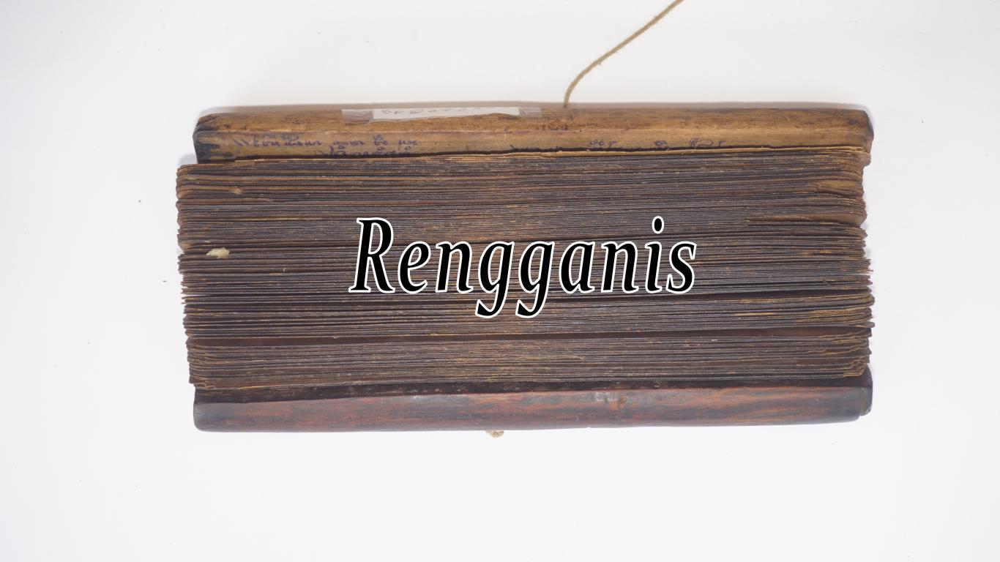
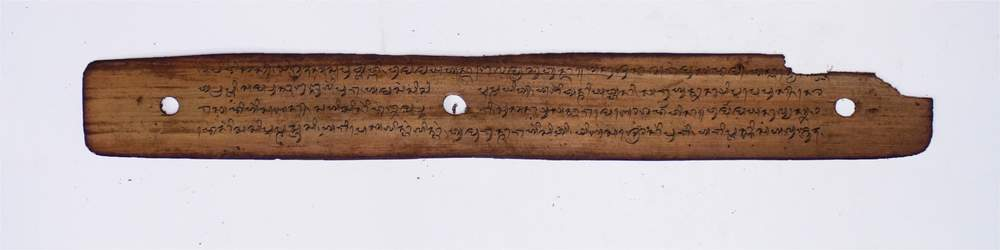

-

Ejaan Latin:
138.Masbagiq joget tekawih, soroh pemaca angkat,tembangng engos makejit.Mun siq nyuling, maraq belong penyu Lapah. nani araq kocap, Raden Irman Nani yaqna, lalu gendang siq pidang, La Kadarmanik leq panjoroan ,Datu Laya, bejerik bepayas pasti.Beterus lampaq teiring siq parekanna, aran Amaq Tombong Beliq, due petempulaq, ndeqna kocap si leqlangan, keceriran dareng gelis. silaiq Naga Mas. tembang pagkur kadun bekuwih, Leman jaoq wah tak surak. silaq mirah pendakin kaji Gusti, ni kakaq leman Medayin, sediah kaji lete gen midang.laiq peng kaji sangkaq nyereq sugul,Raden lrman beterusna tama,bencingah congok melinggih.Dedara putri si dedengah. pada araq jaq matur Laiq putri. sedareng na nyembah matur, Kadarmanik sedek manjak. lan Rengganis laiq dalem jinem harum, pawongan belatur nyembah,kaji aturang leq pengkaji. Raden Irman nika dateng, midang laiq bencingah. congok melinggih, siqna kuwih pengkaji ratu. Kadarmanik manjur nimbal. apa jagaq yaq tak getih basong sesenuq. tau maraq luan jadah . aluh tondong ia adiq nyedi. Rengganis alus siqna nimbal. dull adiq jerah menu sida gusti. sida mirah bagus-bagus, pada sugul temin ia. laun siti mapan sini Ratu Agung, Kadarmanik matur nyembah, silaq kakaq sugul nemin. Rengganis allis penimbal. duh adiq tebareng sugul nemin,
Arti Indonesia:
138.dari Masbagik bergaya joget, yang membaca lontar memakai sambil engosan mengedip.Kalau juru suling, leher penyu lapar, sekarang diceritakan, Raden Irman akan pergi, meriemui calon pengantinnya, Sang Ayu Kadarmanik, Datu Laya bersisir berdandan pasti.Kemudian berjalan diiringi perajurit, namanya amaq Tombong besar potongannya macam babi bunting, tak tersebut kan kisahnya di jalan, diceritakan sekarang, tentang Naga Mas. Rembang memakai memanggil. Dari jauh ia berteriak, ayo manis sambutlah kedatanganku, kakakmu dari Medain, sengaja datang un tuk menemuimu, mari keluarlah manisku, Raden Irman terus masuk. lalu duduk di pendopo. Para dayang yang mendengar, tertawa geli terpingkal-pingkal, ada yang segera memberi tahu, Kadar• manik sedang duduk , bersama ni Ayu Rengganis. dayang-dayang behatur. hamba haturkan kepada tuan. Raden Irman datang menemui tuan. sekarang sedang duduk, di pendapa dia memanggii tuan , Kactannanik lalu berkata, apa yang dicari kemari. apa yang kamu makan disini anjing, manusia macam hantu kamu ini, usir supaya cepat dia pergi. Rengganis berkata lembut, duh Rayi tak baik bilang begitu, keIuarJah Rayi baik-baik, jangan adik kurang tertib. sebab dia Raja Agung, Kadannanik menghatur sembah , silahkan kakak saja yang menemuinya. Rengganis menjawab dengan halus, duh adik baiklah kita
Arti Inggris:
138.